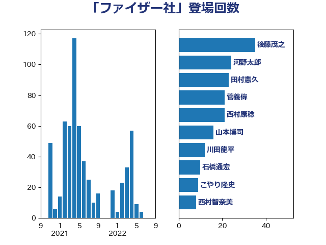

単語「ファイザー社」

| 後藤茂之 | 自由民主党 | 35 回 |
| 河野太郎 | 自由民主党 | 24 回 |
| 田村憲久 | 自由民主党 | 23 回 |
| 菅義偉 | 自由民主党 | 21 回 |
| 西村康稔 | 自由民主党 | 21 回 |
| 山本博司 | 公明党 | 16 回 |
| 川田龍平 | 立憲民主党 | 12 回 |
| 石橋通宏 | 立憲民主党 | 10 回 |
| こやり隆史 | 自由民主党 | 9 回 |
| 西村智奈美 | 立憲民主党 | 8 回 |
| 仁木博文 | 無所属 | 7 回 |
| 吉田統彦 | 立憲民主党 | 7 回 |
| 藤井比早之 | 自由民主党 | 7 回 |
| 西田実仁 | 公明党 | 7 回 |
| 長妻昭 | 立憲民主党 | 7 回 |
| 山際大志郎 | 自由民主党 | 6 回 |
| 岸田文雄 | 自由民主党 | 6 回 |
| 高野光二郎 | 自由民主党 | 6 回 |
| 丸川珠代 | 自由民主党 | 5 回 |
| 田島麻衣子 | 立憲民主党 | 5 回 |
| 中谷一馬 | 立憲民主党 | 4 回 |
| 倉林明子 | 日本共産党 | 4 回 |
| 堀内詔子 | 自由民主党 | 4 回 |
| 斎藤嘉隆 | 立憲民主党 | 4 回 |
| 福島みずほ | 社会民主党 | 4 回 |
| 逢坂誠二 | 立憲民主党 | 4 回 |
| 遠藤敬 | 日本維新の会 | 4 回 |
| 中島克仁 | 立憲民主党 | 3 回 |
| 井上哲士 | 日本共産党 | 3 回 |
| 佐藤茂樹 | 公明党 | 3 回 |
| 大串博志 | 立憲民主党 | 3 回 |
| 大口善徳 | 公明党 | 3 回 |
| 大西健介 | 立憲民主党 | 3 回 |
| 小沢雅仁 | 立憲民主党 | 3 回 |
| 小西洋之 | 立憲民主党 | 3 回 |
| 梅村聡 | 日本維新の会 | 3 回 |
| 櫻井充 | 自由民主党 | 3 回 |
| 福岡資麿 | 自由民主党 | 3 回 |
| 秋野公造 | 公明党 | 3 回 |
| 稲津久 | 公明党 | 3 回 |
| 近藤和也 | 立憲民主党 | 3 回 |
| 佐藤英道 | 公明党 | 2 回 |
| 吉川沙織 | 立憲民主党 | 2 回 |
| 吉田とも代 | 日本維新の会 | 2 回 |
| 吉田忠智 | 立憲民主党 | 2 回 |
| 大島敦 | 立憲民主党 | 2 回 |
| 安江伸夫 | 公明党 | 2 回 |
| 山田勝彦 | 立憲民主党 | 2 回 |
| 本田顕子 | 自由民主党 | 2 回 |
| 村井英樹 | 自由民主党 | 2 回 |
| 東徹 | 日本維新の会 | 2 回 |
| 柚木道義 | 立憲民主党 | 2 回 |
| 柳ヶ瀬裕文 | 日本維新の会 | 2 回 |
| 田畑裕明 | 自由民主党 | 2 回 |
| 若松謙維 | 公明党 | 2 回 |
| 三原じゅん子 | 自由民主党 | 1 回 |
| 下村博文 | 自由民主党 | 1 回 |
| 中西祐介 | 自由民主党 | 1 回 |
| 串田誠一 | 日本維新の会 | 1 回 |
| 伊佐進一 | 公明党 | 1 回 |
| 加藤勝信 | 自由民主党 | 1 回 |
| 勝目康 | 自由民主党 | 1 回 |
| 古屋範子 | 公明党 | 1 回 |
| 吉川元 | 立憲民主党 | 1 回 |
| 塩田博昭 | 公明党 | 1 回 |
| 山崎正恭 | 公明党 | 1 回 |
| 杉久武 | 公明党 | 1 回 |
| 松本洋平 | 自由民主党 | 1 回 |
| 榛葉賀津也 | 国民民主党 | 1 回 |
| 橋本岳 | 自由民主党 | 1 回 |
| 渡辺周 | 立憲民主党 | 1 回 |
| 田村まみ | 国民民主党 | 1 回 |
| 矢倉克夫 | 公明党 | 1 回 |
| 石井章 | 日本維新の会 | 1 回 |
| 石垣のりこ | 立憲民主党 | 1 回 |
| 石川博崇 | 公明党 | 1 回 |
| 竹内譲 | 公明党 | 1 回 |
| 篠原豪 | 立憲民主党 | 1 回 |
| 美延映夫 | 日本維新の会 | 1 回 |
| 羽生田俊 | 自由民主党 | 1 回 |
| 舟山康江 | 国民民主党 | 1 回 |
| 芳賀道也 | 国民民主党 | 1 回 |
| 茂木敏充 | 自由民主党 | 1 回 |
| 萩生田光一 | 自由民主党 | 1 回 |
| 藤原崇 | 自由民主党 | 1 回 |
| 谷田川元 | 立憲民主党 | 1 回 |
| 道下大樹 | 立憲民主党 | 1 回 |
| 野上浩太郎 | 自由民主党 | 1 回 |
| 高市早苗 | 自由民主党 | 1 回 |